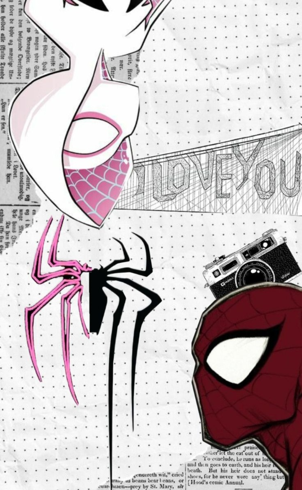
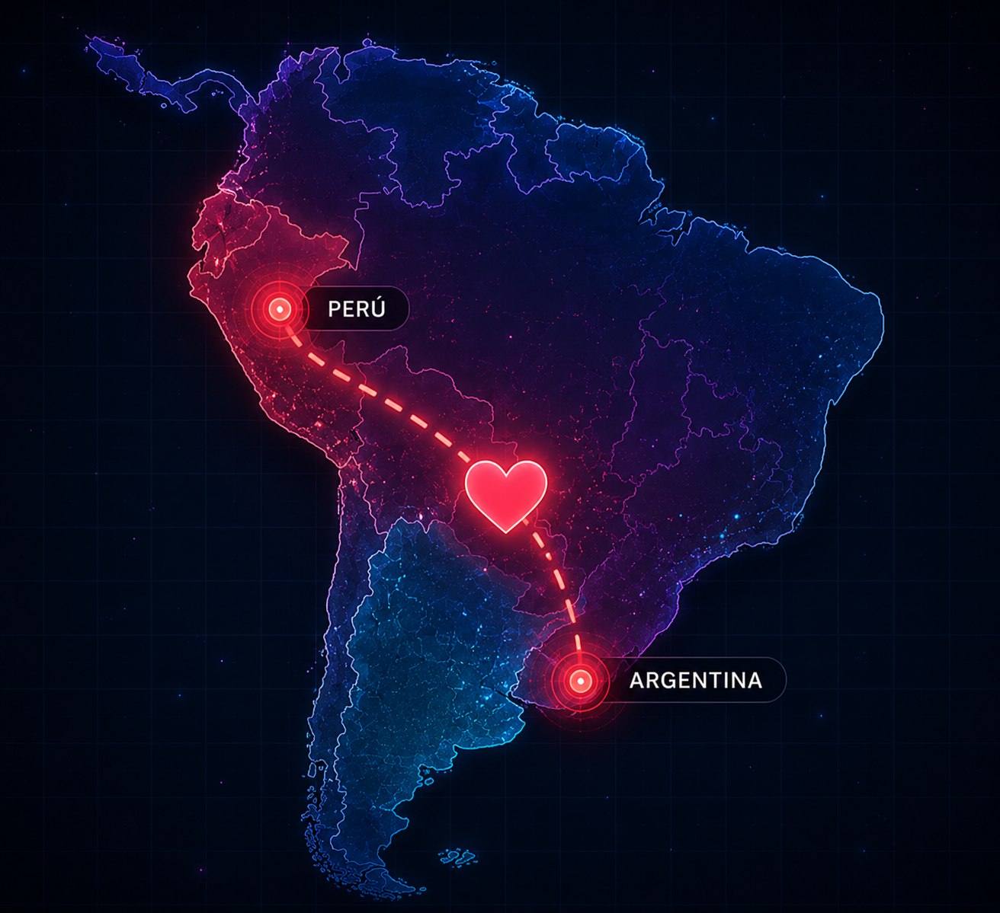
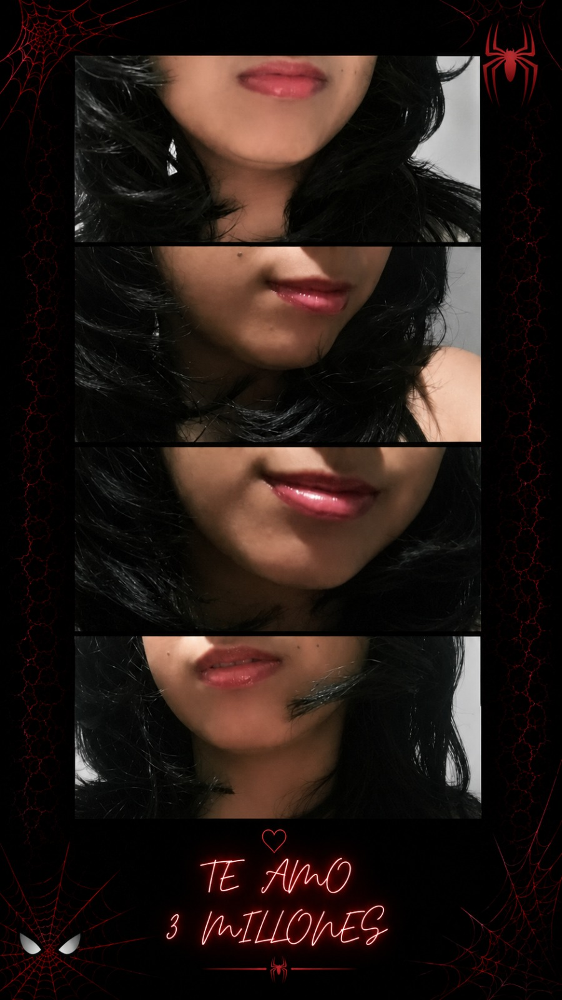

ARCHIVO CLASIFICADO
INICIANDO PROTOCOLO...

SPIDER-VERSE EDITION
TENGO ALGO MUY IMPORTANTE QUE DECIRTE...
TOCA PARA ABRIR
Primero que nada...
Feliz cumpleaños. ❤️
La verdad llevo varios días pensando en cómo escribir esta carta y, siendo sincera, todavía siento que ninguna palabra alcanza para decir todo lo que quiero decirte. Ya sabes que expresar lo que siento nunca ha sido mi fuerte. Normalmente prefiero molestarte, hacer una broma o cambiar de tema antes que ponerme sentimental, pero hoy quería hacer un pequeño esfuerzo porque siento que realmente te lo mereces.
Espero de todo corazón que tengas un día muy bonito. Que la pases con tu familia, con tus amigos o haciendo cualquier cosa que te haga feliz. Y sí, ya sé que siempre me dices que antes de tu cumpleaños o incluso el mismo día termina pasando algo que arruina un poco las cosas, pero este año me niego a aceptarlo. Ya te lo dije una vez y lo sigo sosteniendo: haré algún ritual, una brujería o lo que sea necesario jajaja, porque este cumpleaños TIENE que salir bien. Y si al final resulta que te quedas en tu casa sin ningún plan... ya sabes que me vas a tener llamándote y acompañándote todo el tiempo que pueda. Así que no tienes escapatoria.
Lo más curioso de todo esto es que, hace unos meses, jamás me habría imaginado estar escribiéndole una carta tan larga a alguien que vivía en otro país. La verdad ni siquiera sé en qué momento pasó. Entre conversaciones, audios, partidas, TikToks y un montón de momentos pequeños, sin darme cuenta terminaste convirtiéndote en una de las personas más importantes que llegaron a mi vida este año.
Como ya debes haberte dado cuenta, soy demasiado tímida y muchas veces ni siquiera sé qué tema sacar para seguir una conversación. Pero hay algo que siempre me nace hacer contigo: preguntarte cómo estuvo tu día, qué hiciste, cómo te fue o simplemente cómo estás. Sé que no eres una persona muy acostumbrada a contar lo que siente o lo que le pasa y, precisamente por eso, siempre intento preguntarte. Porque de verdad me gusta saber de ti. Me gusta cuando poco a poco me vas contando cosas, cuando me mandas un audio, cuando compartes conmigo algo que te pasó o hasta cuando me dices que tuviste un día pesado. No sé si alguna vez lo notaste, pero me hace feliz sentir que, aunque sea de a poquito, me dejas conocer una parte más de ti. Y quiero que sepas que, así como siempre quiero saber de tus días buenos, también quiero estar para los malos. Si algún día te sientes mal, si algo te preocupa o incluso si alguna vez hago algo que te moleste, quiero que sientas la confianza de decírmelo. Porque me importa saber cómo estás, incluso cuando no todo va bien.
Y hay algo más que quería decirte, porque creo que nunca te lo había explicado del todo. Perdón si alguna vez me contaste algo importante y después se me olvidó, o si en algún momento sentiste que no le di la importancia que merecía. Te prometo que nunca ha sido porque no me importe o porque no quiera escucharte. Mi cabeza a veces es un completo desastre jajaja. Hay cosas que desearía olvidar y, por más que lo intento, siguen ahí. Y también hay otras que de verdad quiero recordar, pero simplemente mi memoria me juega una mala pasada. Si alguna vez eso te hizo sentir mal, de verdad lo siento. Porque si hay algo que siempre quiero es que sientas que puedes contarme cualquier cosa, las veces que haga falta. Yo voy a seguir preguntándote cómo estás, cómo te fue en el día o qué pasó, no porque se me haya olvidado lo anterior, sino porque realmente me importa saber de ti y nunca quiero que pienses lo contrario.
Y creo que fue justamente ahí cuando empecé a darme cuenta de lo mucho que me importabas. Sin darme cuenta, empecé a acostumbrarme a muchas cosas. A esperar tus mensajes, a revisar el celular con la esperanza de encontrar uno tuyo y saber que, tarde o temprano, iba a terminar riéndome por alguna tontería o incluso discutiendo contigo por cualquier otra.
De hecho, me acuerdo de una vez que salí con mi madrina y justo estábamos hablando. Yo miraba el celular cada dos minutos porque quería responderte rápido y ella no dejaba de preguntarme quién era la persona que me tenía tan pendiente del teléfono. Yo le respondí toda nerviosa que eras un amigo, pero creo que se dio cuenta de cómo me puse porque solamente se empezó a reír y ya no volvió a decir nada. Hasta ahora me acuerdo de ese momento y todavía me da un poquito de vergüenza jajaja.
También me acostumbré a que me mandes TikToks. Ya sean de esos bonitos que hacen que automáticamente piense en ti o de los que prácticamente son una indirecta para pedirme algo jajaja. Creo que ya perdí la cuenta de cuántos me has enviado.
Y tampoco puedo dejar de mencionar todas las veces que me sorprendiste con los pases en el juego. La verdad, todavía siento que muchas veces no los merecía o que no era necesario que hicieras eso por mí. Pero, aun así, quiero que sepas que valoro muchísimo cada detalle que has tenido conmigo. No es por el regalo en sí, sino porque detrás de cada uno siempre sentí que había una intención bonita, y eso es lo que realmente me hacía feliz. Gracias por todos esos pequeños detalles que, aunque quizá para ti parecían normales, para mí significaron muchísimo.
También me acostumbré a nuestras partidas de Free, donde casi siempre terminas acarreándome mientras yo hago cualquier cosa menos ayudarte, ya sabes jajaja. Sé perfectamente que a veces te desesperas por las cosas que hago dentro del juego, pero aun así ahí estás otra vez jugando conmigo. Creo que ya te acostumbraste un poquito... o al menos eso quiero creer. Eso sí, hay algo que te voy a seguir reclamando siempre: puedes enojarte con el juego o con lo que sea todo lo que quieras... pero conmigo no, ¿sí? Ya sabes que cada vez que se te escapa una grosería conmigo te toca aguantar que te regañe, aunque, siendo sincera, creo que ya sabes que nunca puedo enojarme contigo por mucho tiempo.
Hay algo más que quiero agradecerte y que quizá nunca te había dicho. Gracias por hacerme reír en momentos en los que ni siquiera sabía que lo necesitaba. Gracias por aparecer este año. Gracias por tenerme paciencia cuando me cuesta seguir una conversación o cuando simplemente no sé qué decir. Gracias por hacer que hasta las conversaciones más simples terminaran convirtiéndose en una de mis partes favoritas del día.
Y ya sabes que no puedo terminar esta carta sin volver a decirte lo mismo de siempre...
Cuídate.
Sí, otra vez jajaja.
Ya sé que probablemente estés leyendo esto y diciendo: "Nicole ya empezó", pero no me importa. Cada vez que me dices que vas a salir, que vas a tomar o que vas a hacer alguna locura, automáticamente me preocupo. No porque crea que no sabes cuidarte, sino porque simplemente quiero que estés bien. Quiero que llegues sano y salvo a tu casa, que todo salga bien y poder seguir molestándote durante muchísimo tiempo más. Así que, por favor... hazme caso aunque sea un poquito de vez en cuando.
Espero que este cumpleaños sea solo el primero de muchos que pueda celebrar contigo, aunque sea desde lejos. Porque todavía nos quedan muchas conversaciones, muchas partidas donde vas a seguir acarreándome (y quejándote de mí), muchos TikToks por enviarme y, sí... todavía sigue pendiente esa película de Barbie jajaja. Así que no creas que te vas a librar tan fácil de mí.
Y... solo un favor más. Procura no volver a llenar tanto tu lista de amigas, porque ya sabes que después me toca hacer limpieza 😌.
Y, por cierto... sé que hay un par de cosas que llevas pidiéndome desde hace bastante tiempo. Digamos que decidí guardar una para el final.
La verdad me da un poquito de vergüenza y también muchos nervios porque no tengo idea de si te va a gustar o no. Pero, aun así, quise hacerlo porque sabía que era algo que tú querías desde hace tiempo. Así que, cuando llegue ese momento... solo espero que, aunque no sea perfecto, puedas escucharlo sabiendo que lo hice con muchísimo cariño.
En fin... creo que terminé escribiendo muchísimo más de lo que tenía pensado jajaja. Y, aun así, siento que todavía me quedaron muchas cosas por decir.
Solo quiero que seas muy feliz. Que cumplas todas esas metas que tienes, que nunca pierdas esa forma de ser que tanto me gusta y que la vida te devuelva, poquito a poquito, todo lo bueno que tú les das a las personas que te rodean.
Gracias por aparecer en mi vida este año. Gracias por cada conversación, cada risa, cada TikTok, cada audio, cada partida y por todos esos pequeños momentos que, sin darte cuenta, hicieron que te convirtieras en alguien tan importante para mí.
Y, por si todavía no había quedado suficientemente claro...
Te amo 3 millones.
(Sí, sí... ya lo dije bien. Pero sigo creyendo firmemente que "3000" también era válido JAJAJA.)
Con muchísimo cariño,
Nicole ❤️
LA DISTANCIA

Todo empezó con una conversación cualquiera, sin imaginar que alguien al otro lado del mapa terminaría siendo tan importante para mí.
ESTO ES PARA TI
Sé que hace mucho tiempo me pediste esta foto y que, la verdad, no sabías si algún día te la iba a mandar o no jajaja.
Como ya habrás notado durante toda esta carta, soy una persona bastante insegura y me daba muchísima vergüenza. No tenía idea de si te iba a gustar o no, pero al final decidí dejar de pensarlo tanto...
Así que aquí está. ❤️
No sé si todavía la quieras de fondo de pantalla... pero espero que, por lo menos, te saque una sonrisa.

Si llegaste hasta aquí...
Gracias por leer todo hasta el final. ❤️
Ahora sí viene la parte que más nervios me da de toda esta sorpresa...
Y antes de que le des play...
Prométeme que no te vas a burlar. 😒
Porque ya sabes perfectamente que no me gusta cantar jajaja.
GRACIAS POR APARECER EN MI VIDA.